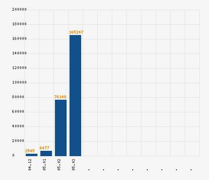

8/3/05 — Từ MINGHUI.ORG
Tà linh ĐCSTQ đã lựa chọn con đường chống phá Pháp Luân Đại Pháp, và ngày tàn của nó đang đến gần khi Chính Pháp sắp đến nhân gian. Để tránh lây tai hoạ đó, thì việc thoái đảng (chính thức công bố rút khỏi ĐCSTQ và các tổ chức liên đới) là điều cấp bách, từ đó tránh khỏi dấu ấn của con ác thú kia.

Số người thoái đảng thoái đoàn đã tăng vọt hàng tháng theo thống kê của website “thoái đảng” của Thời báo Đại Kỷ Nguyên (DAJIYUAN.COM) — theo thống kê vào ngày 7-3-2005.
Tháng 11-2004, Thời báo Đại Kỷ Nguyên đã công bố “cửu bình” —Chín bài bình luận về ĐCSTQ— để giúp cộng đồng người Hoa, nhất là những ai đã từng sinh sống dưới chế độ ĐCSTQ lừa dối bưng bít thông tin một thời gian lâu, thấy được bản chất của ĐCSTQ. Lập tức “cửu bình” được lưu truyền rộng khắp và người dân dần dần nhận ra một cách sâu sắc hơn về con tà linh cộng sản. Từ đó dẫn đến một trào lưu công bố rút lui khỏi ĐCSTQ và các tổ chức liên quan. Mật độ những công bố thoái đảng thoái đoàn được đưa đến Minh Huệ Net (minghui.org) đã tăng lên gấp đôi trong thời gian gần đây. Số những đơn thoái đảng thoái đoàn nhận được vào sáng ngày 7-3-2005 đã đạt con số 2000, trong đó có một đơn tập thể với 199 chữ ký. Một nhóm khác gồm 583 người. Những công bố thoái đảng thoái đoàn chuyển qua Minh Huệ Net chủ yếu là của các học viên Pháp Luân Đại Pháp gửi sau khi nhận rõ bản tính tà ác của tà linh cộng sản; nhưng cũng có một số không phải là học viên Pháp Luân Đại Pháp, họ quyết định thoái đảng thoái đoàn sau khi chứng kiến sự thật về cuộc đàn áp do ĐCSTQ nhắm vào Pháp Luân Công, một nhóm tu tập với mong muốn trở thành người tốt. Nhất là sau khi đọc “cửu bình”, họ cảm thấy rằng không thể tiếp tục làm một thành viên liên đới với ĐCSTQ, do vậy, họ đã công bố thoái đảng thoái đoàn và thoái đội (rút lui khỏi đảng cộng sản, rút lui khỏi đoàn thanh niên cộng sản và rút lui khỏi đội thiếu niên tiền phong).
Theo các báo cáo, ĐCSTQ gần đây đã gia tăng cố gắng để bưng bít tất cả các cửa ngõ thông tin nhằm phong toả người dân Trung Quốc khỏi “cửu bình”. Tất cả các kênh truyền thông của ĐCSTQ thậm chí còn giữ im lặng về vấn đề “cửu bình” vốn đang trở nên vấn đề thời sự nóng bỏng. Tháng 1-2005, ĐCSTQ phát động một cuộc vận động chỉnh phong mang tên “bảo tiến” chấn chỉnh nội bộ ĐCSTQ: một áp lực nặng nề được đặt ra nhằm đẩy người dân gia gia nhập ĐCSTQ, bắt học kỹ lưỡng hơn nữa cái gọi là “lịch sử đảng”, và bắt làm lại các tuyên thệ trung thành với đảng,… Nhưng những cố gắng ấy của ĐCSTQ dường như không có tác dụng trước làn sóng thoái đảng. Sau khi dân chúng nhận ra rằng “bảo tiến” chính là sự lo sợ của ĐCSTQ trước nguy cơ “cửu bình” được phổ biến lan tràn, nhiều người lại càng muốn tìm đọc cửu bình. Tại Trung Quốc hiện nay, đã là quá khó để ngăn chặn cửu bình phát tán trong dân chúng cũng như ngay trong nội bộ đảng. Nhiều người đã đến các hãng du lịch để tìm đọc cửu bình do du khách đưa tới, và họ cũng yêu cầu bạn bè thân quyến cũng thoái đảng cùng họ.
Tính đến ngày 7-3-2005, số người thoái đảng —theo Thời báo Đại Kỷ Nguyên thống kê— đã vượt quá con số 160.000 người, với tốc độ khoảng 10.000 người mỗi ngày. Hầu hết các công bố được gửi từ Trung Quốc, với địa danh từ hầu hết các tỉnh thành và địa khu của Trung Quốc, bao gồm các ngành nghề khác nhau trong xã hội: nhân viên công vụ, kỹ thuật viên, quan chức nhà nước, học giả, giáo sư, công nhân, nông dân, cảnh sát, quân sỹ,…